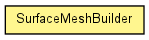

toxi.geom.mesh
Class SurfaceMeshBuilder
java.lang.Object
 toxi.geom.mesh.SurfaceMeshBuilder
toxi.geom.mesh.SurfaceMeshBuilder
public class SurfaceMeshBuilder
- extends java.lang.Object

An extensible builder class for TriangleMeshes based on 3D surface
functions using spherical coordinates. In order to create mesh, you'll need
to supply a SurfaceFunction implementation to the builder.
| Methods inherited from class java.lang.Object |
equals, getClass, hashCode, notify, notifyAll, toString, wait, wait, wait |
SurfaceMeshBuilder
public SurfaceMeshBuilder(SurfaceFunction function)
createMesh
public Mesh3D createMesh(int res)
createMesh
public Mesh3D createMesh(Mesh3D mesh,
int res,
float size)
createMesh
public Mesh3D createMesh(Mesh3D mesh,
int res,
float size,
boolean isClosed)
getFunction
public SurfaceFunction getFunction()
- Returns:
- the function
setFunction
public void setFunction(SurfaceFunction function)
- Parameters:
function - the function to set